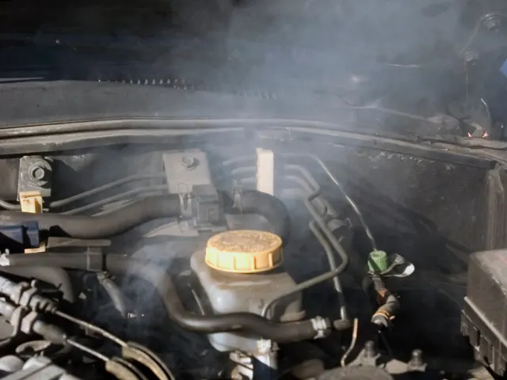

Voorkom Motoroververhitting in Nijmegen met de Juiste Koelvloeistof
Gepubliceerd op 12 september 2024

Motoroververhitting is een probleem waarmee elke bestuurder te maken kan krijgen, vooral in druk verkeer of tijdens lange ritten. In Nijmegen, waar drukte op de wegen tijdens spitsuren vaak voorkomt, is het belangrijk om extra aandacht te besteden aan het koelsysteem van je auto. Het koelsysteem van het voertuig is erg belangrijk om ervoor te zorgen dat de motor niet oververhit raakt en soepel blijft draaien. In dit artikel bespreken we hoe je motoroververhitting op de wegen in en rondom Nijmegen kunt voorkomen door de juiste koelmethoden te gebruiken en het koelsysteem goed te onderhouden.
Wat veroorzaakt motoroververhitting?
Motoroververhitting ontstaat meestal wanneer het koelsysteem er niet in slaagt om overtollige warmte af te voeren. De belangrijkste oorzaken van oververhitting zijn een gebrek aan koelvloeistof, een defecte radiator of waterpomp, en beschadigde slangen van het koelsysteem. In druk verkeer of tijdens lange ritten, zoals wanneer je vanuit Nijmegen naar andere delen van Nederland reist, neemt de belasting op de motor toe, wat het koelsysteem extra belangrijk maakt.
Het belang van regelmatige controle van het koelvloeistofniveau
Een van de eenvoudigste en meest effectieve manieren om motoroververhitting te voorkomen, is door regelmatig het koelvloeistofniveau te controleren. Dit kun je eenvoudig zelf doen door onder de motorkap te kijken. Zorg ervoor dat het vloeistofniveau tussen de markeringen ‘min’ en ‘max’ staat. Als het niveau te laag is, kan dit wijzen op een lek, en in dat geval is het raadzaam om een specialist te raadplegen.
Naast het controleren van het niveau is het belangrijk om de conditie van de vloeistof in de gaten te houden. Na verloop van tijd verliest antivries zijn eigenschappen en biedt het niet langer effectieve bescherming tegen oververhitting en corrosie. Het wordt aanbevolen om de koelvloeistof elke 2-3 jaar te vervangen, zelfs als het niveau op peil lijkt te zijn.

De juiste antivries kiezen
Het kiezen van de juiste antivries speelt ook een belangrijke rol bij het voorkomen van oververhitting. Er zijn verschillende soorten koelvloeistoffen, en ze zijn niet allemaal compatibel met elkaar. Bij het kiezen van antivries moet je letten op de aanbevelingen van de autofabrikant. Deze informatie is meestal te vinden in de gebruikershandleiding van de auto. Sommige antivriesmiddelen bevatten extra toevoegingen die hun beschermende eigenschappen versterken, zoals betere bescherming tegen corrosie of verlenging van de levensduur van het koelsysteem.
Gebruik van kwalitatief goede antivries helpt oververhitting te voorkomen en verlengt de levensduur van de motor. Voor specifieke merken en modellen, zoals de Mercedes A-Klasse, kun je informatie over koelvloeistof Mercedes A-Klasse met AUTODOC vinden, waar je advies krijgt over het juiste onderhoud en het gebruik van de juiste vloeistof.
Hoe oververhitting in het verkeer van Nijmegen te voorkomen?
Nijmegen kent ook zijn momenten van drukte, vooral tijdens spitsuren wanneer veel automobilisten de stad in of uit willen. In een file draait de motor stationair en wordt het koelsysteem extra belast. In zo’n situatie is het belangrijk om enkele maatregelen te nemen om oververhitting te voorkomen:
- Schakel de airconditioning uit: De airco verhoogt de belasting op de motor, wat in langzaam of stilstaand verkeer kan leiden tot oververhitting. Open in plaats daarvan de ramen om frisse lucht binnen te laten.
- Let op de temperatuurmeter: Als de wijzer naar de kritieke grens stijgt, zoek dan een plek waar je veilig kunt stoppen om de motor te laten afkoelen.
- Gebruik de neutrale versnelling bij verkeerslichten: Dit helpt de belasting op de motor te verminderen wanneer je in een file staat of lang stilstaat.
Preventie voor lange ritten vanuit Nijmegen
Voor langere ritten, bijvoorbeeld als je van Nijmegen naar andere delen van Nederland rijdt, is het van groot belang om regelmatig het koelvloeistofniveau te controleren en de staat ervan goed in de gaten te houden. Koelvloeistof, ook wel antivries genoemd, stroomt door het koelsysteem van de motor om overtollige warmte af te voeren en de interne componenten van het systeem tegen corrosie te beschermen.
Conclusie
Motoroververhitting is een probleem dat gemakkelijker te voorkomen is dan de gevolgen ervan te verhelpen. Regelmatige controle van het niveau en de staat van de koelvloeistof, het kiezen van de juiste antivries en een zorgvuldige benadering van het koelsysteem helpen oververhitting op de wegen van en naar Nijmegen te voorkomen, vooral in files of tijdens lange ritten. Regelmatig auto-onderhoud is de sleutel tot langdurige en veilige werking van de auto.